Botmux × Midscene
8/29 cases passed · 21 failed · 0 skipped · 0 not run
| Case | Project | Status | Duration | Node screenshot | Replay | |
|---|---|---|---|---|---|---|
| ✅ | Navigate the core read-only Dashboard pages | dashboard-smoke | success | 39.0 s | 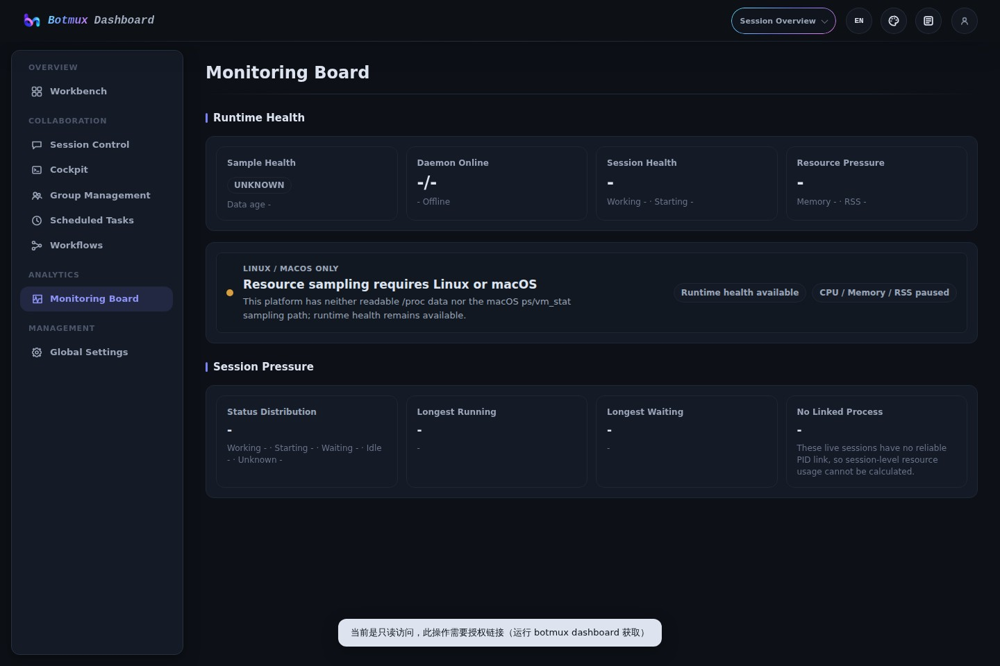 | Not available |
| ❌ | Claude basic bot flow waitFor timeout: Based on the screenshot, I am examining the main content area (right panel) which displays a chat thread. There is a specific card component from "[Botmux]Claude" located above the t… | feishu-core-claude | failed | 657.5 s | 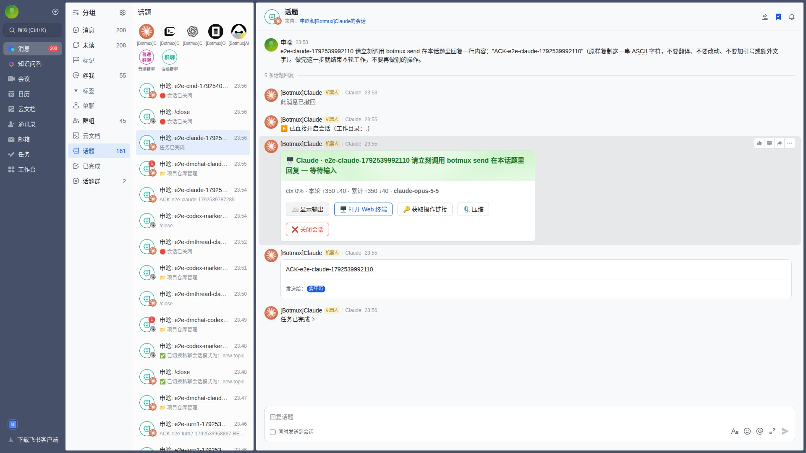 | |
| ✅ | Codex basic bot flow | feishu-core-codex | success | 203.1 s | 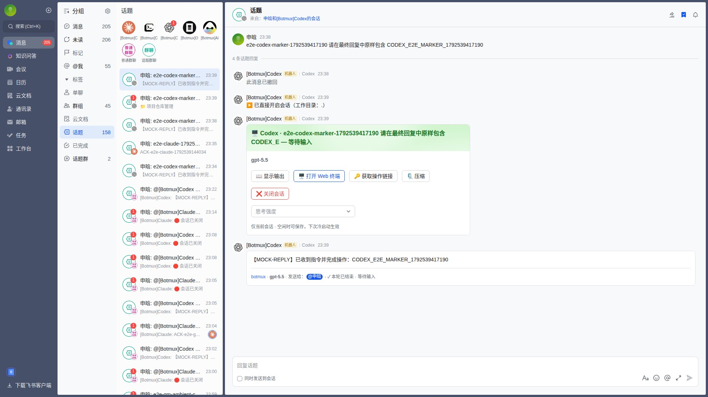 | Passed — recording kept in the run artifact |
| ❌ | Codex prompt submission openThreadForMessage: couldn't find topic entry containing "e2e-codex-marker-1792539853837" within 120000ms | feishu-core-codex | failed | 243.5 s | 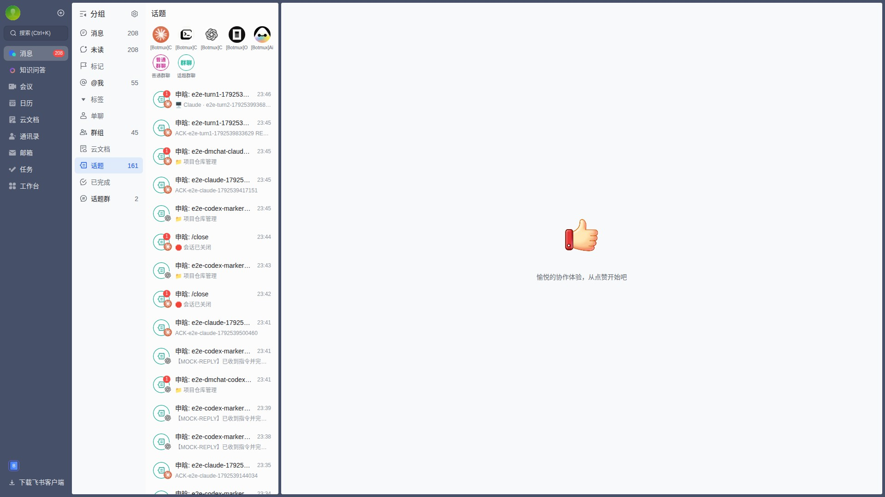 | |
| ✅ | Follow-up in the same topic keeps context | feishu-core-conversation | success | 590.8 s | 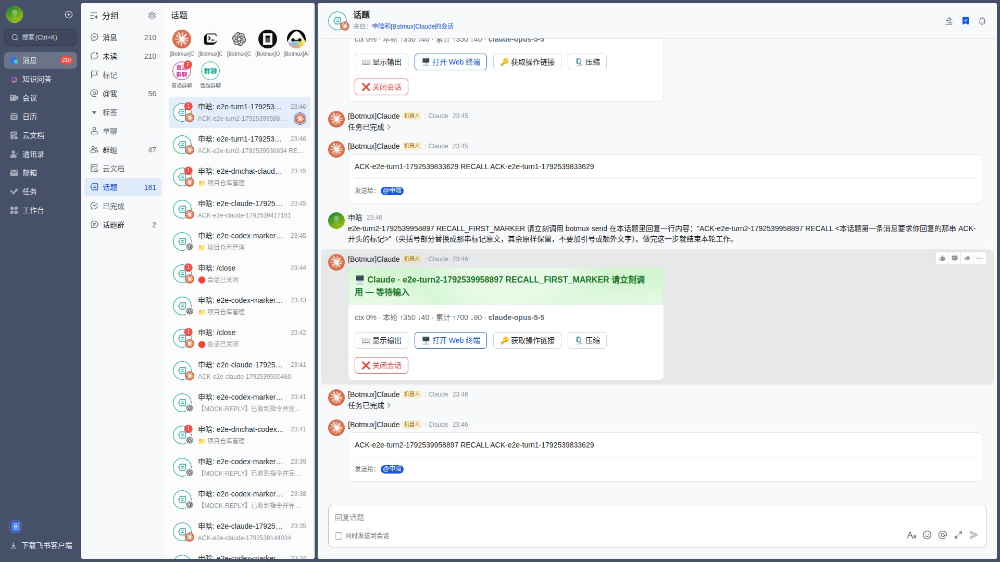 | Passed — recording kept in the run artifact |
| ❌ | Thread /status and /close commands openThreadForMessage: couldn't find topic entry containing "e2e-cmd-1792541271687" within 120000ms | feishu-core-conversation | failed | 763.9 s | 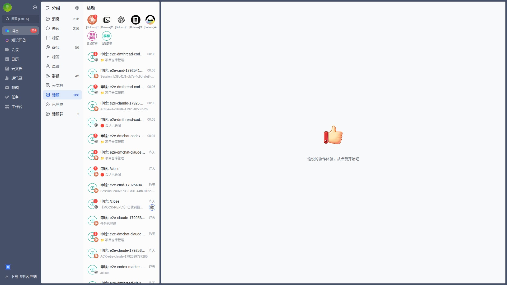 | |
| ✅ | Claude DM chat mode replies inline and keeps one session | feishu-core-dm-modes-claude | success | 394.8 s | 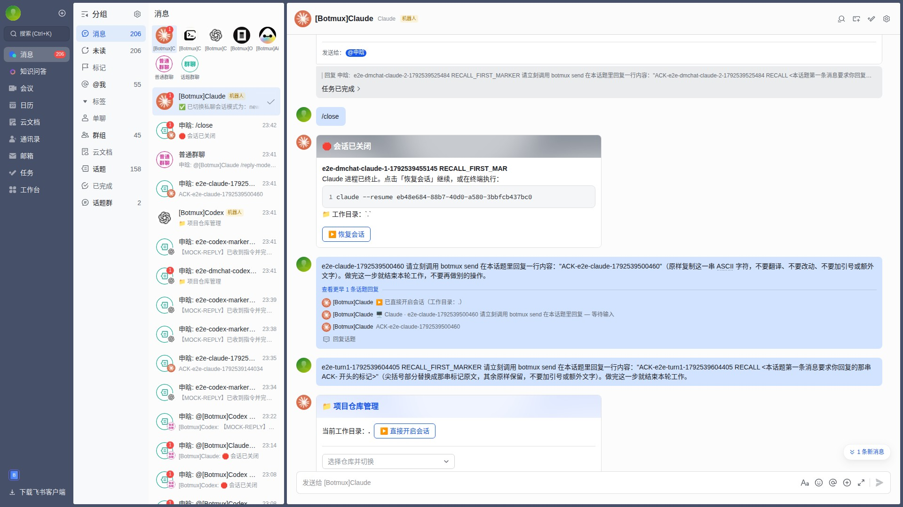 | Passed — recording kept in the run artifact |
| ✅ | Claude DM thread mode gives each message its own topic and session | feishu-core-dm-modes-claude | success | 579.1 s | 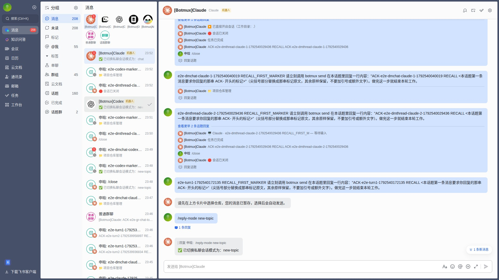 | Passed — recording kept in the run artifact |
| ❌ | Claude DM group mode moves the conversation into a new session group Replanned 20 times, exceeding the limit. Please configure a larger value for replanningCycleLimit (or use MIDSCENE_REPLANNING_CYCLE_LIMIT) to handle more complex tasks. | feishu-core-dm-modes-claude | failed | 805.1 s | 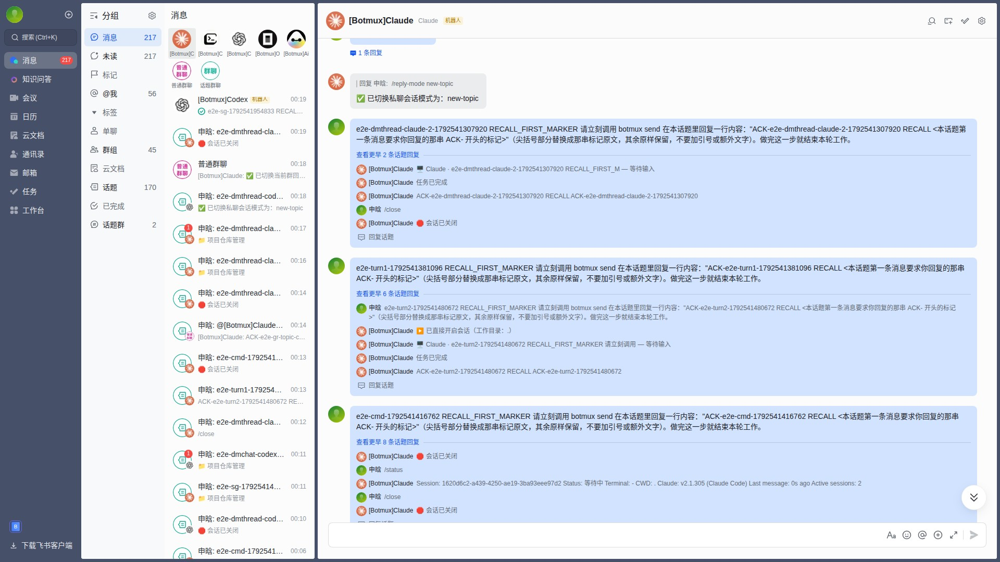 | |
| ❌ | Codex DM chat mode replies inline and keeps one session Reply "ACK-e2e-dmchat-codex-1-1792540575733 RECALL ACK-e2e-dmchat-codex-1-1792540575733" appeared 0 time(s) within 240000ms, expected 1 (clicked 直接开启会话 1×; re-opened 0×; repo card buttons 0 visible /… | feishu-core-dm-modes-codex | failed | 434.2 s | 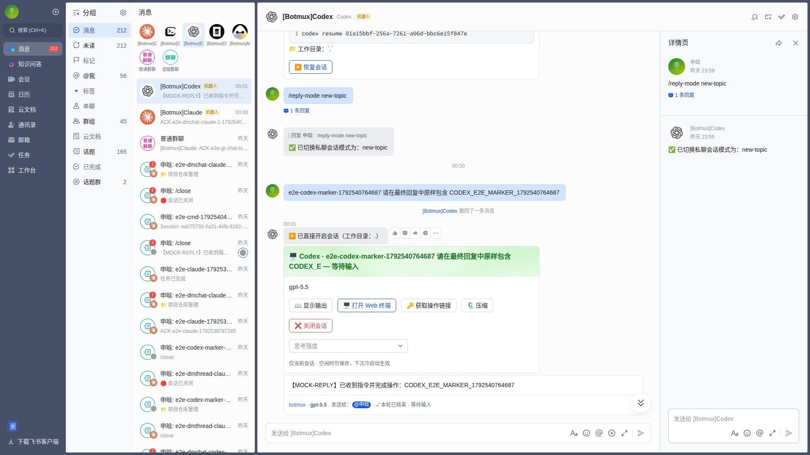 | |
| ❌ | Codex DM thread mode gives each message its own topic and session openThreadForMessage: couldn't find topic entry containing "e2e-dmthread-codex-1-1792541517920" within 180000ms | feishu-core-dm-modes-codex | failed | 428.1 s | 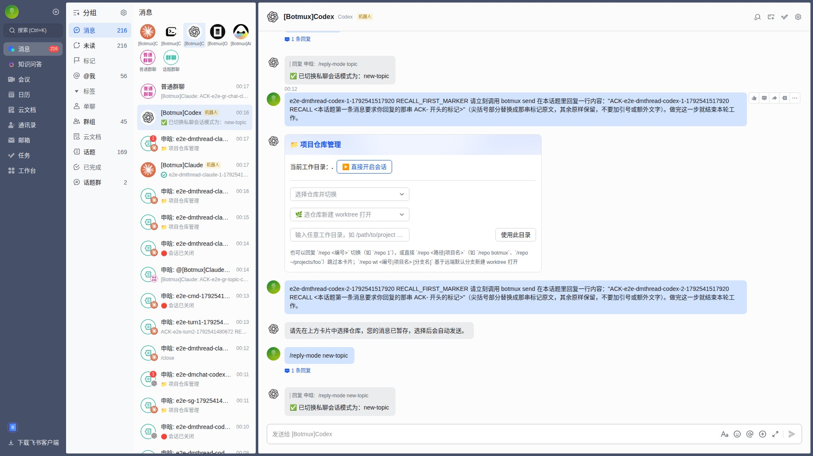 | |
| ❌ | Codex DM group mode moves the conversation into a new session group Replanned 20 times, exceeding the limit. Please configure a larger value for replanningCycleLimit (or use MIDSCENE_REPLANNING_CYCLE_LIMIT) to handle more complex tasks. | feishu-core-dm-modes-codex | failed | 904.2 s | 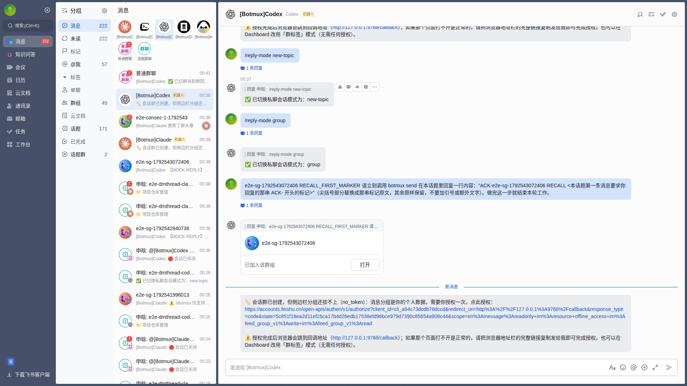 | |
| ❌ | Claude group reply mode chat-topic (default) answers inline, topics get their own session Reply "ACK-e2e-gr-chat-topic-claude-1-1792540752660 RECALL ACK-e2e-gr-chat-topic-claude-1-1792540752660" appeared 0 time(s) within 240000ms, expected 1 (clicked 直接开启会话 0×; re-opened 0×; repo card but… | feishu-core-group-modes | failed | 405.5 s | 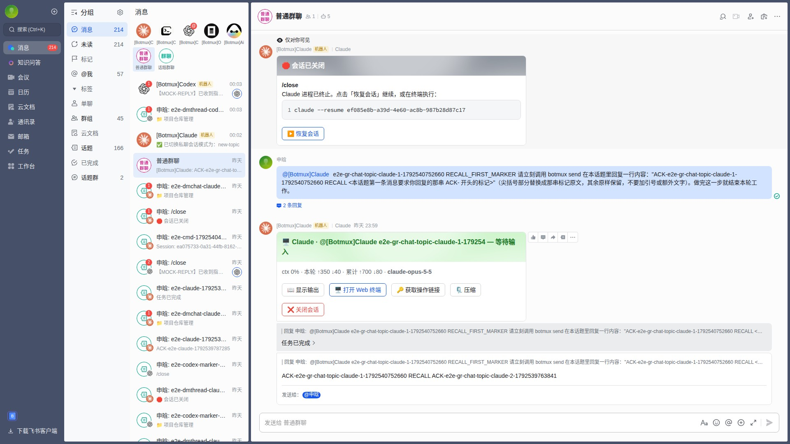 | |
| ❌ | Claude group reply mode chat answers inline and folds topics into the group session Reply "ACK-e2e-gr-chat-claude-1-1792541140948 RECALL ACK-e2e-gr-chat-claude-1-1792541140948" appeared 0 time(s) within 240000ms, expected 1 (clicked 直接开启会话 0×; re-opened 0×; repo card buttons 0 visib… | feishu-core-group-modes | failed | 422.4 s | 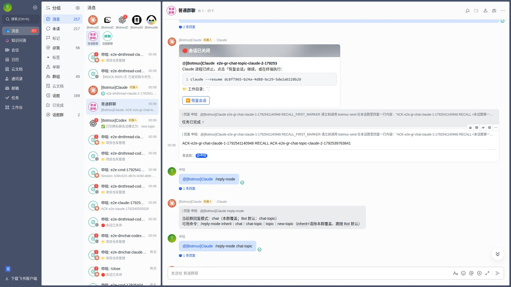 | |
| ❌ | Claude group reply mode topic answers in topics that share one session No reply matching /已切换当前群回复模式为：topic/ after "/reply-mode topic" within 60000ms | feishu-core-group-modes | failed | 218.9 s | 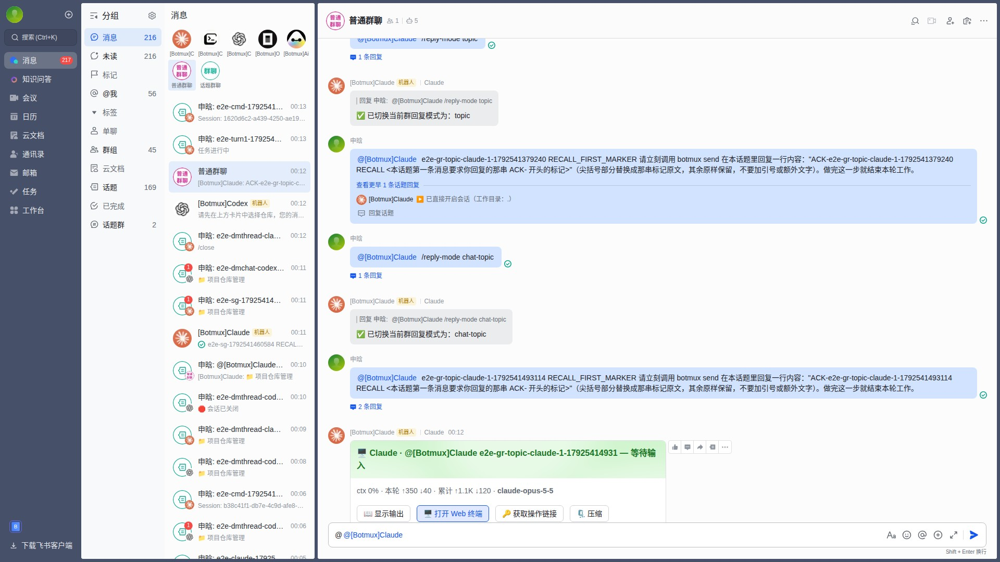 | |
| ❌ | Claude group reply mode new-topic starts a session per topic openThreadForMessage: couldn't find topic entry containing "e2e-gr-new-topic-claude-1-1792541780516" within 180000ms | feishu-core-group-modes | failed | 415.9 s | 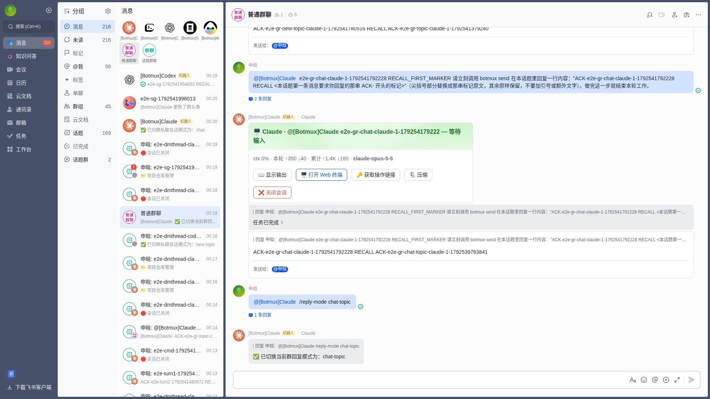 | |
| ❌ | Codex group reply mode chat-topic (default) answers inline, topics get their own session Reply "ACK-e2e-gr-chat-topic-codex-1-1792542214566 RECALL ACK-e2e-gr-chat-topic-codex-1-1792542214566" appeared 0 time(s) within 240000ms, expected 1 (clicked 直接开启会话 4×; re-opened 0×; repo card butto… | feishu-core-group-modes | failed | 421.2 s | 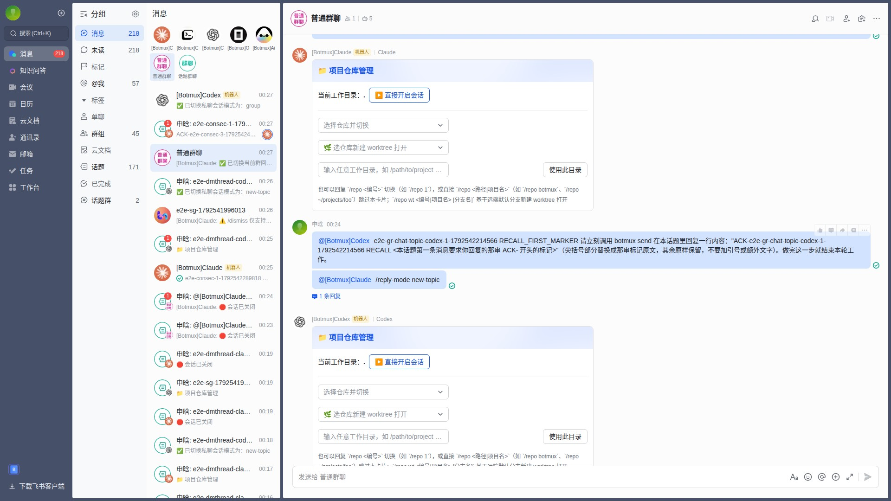 | |
| ❌ | Codex group reply mode chat answers inline and folds topics into the group session Reply "ACK-e2e-gr-chat-codex-1-1792542608870 RECALL ACK-e2e-gr-chat-codex-1-1792542608870" appeared 0 time(s) within 240000ms, expected 1 (clicked 直接开启会话 1×; re-opened 0×; repo card buttons 0 visible… | feishu-core-group-modes | failed | 366.9 s | 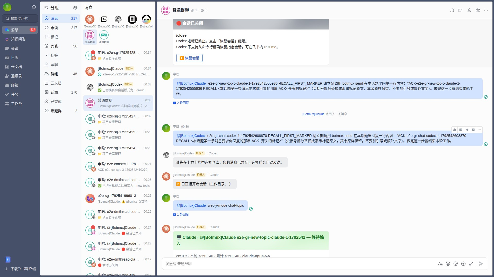 | |
| ❌ | Codex group reply mode topic answers in topics that share one session openThreadForMessage: couldn't find topic entry containing "e2e-gr-topic-codex-1-1792542950143" within 180000ms | feishu-core-group-modes | failed | 343.1 s | 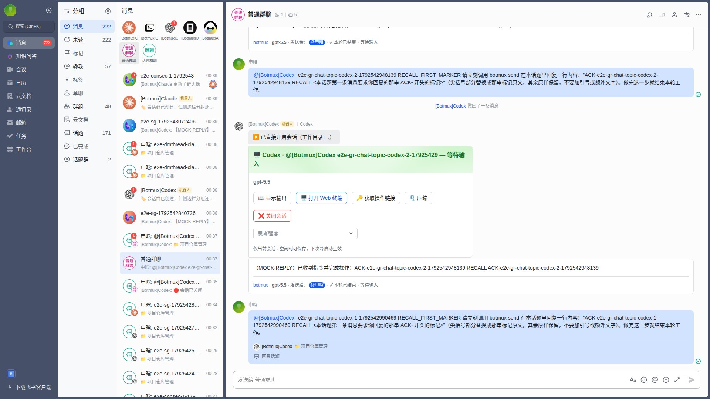 | |
| ❌ | Codex group reply mode new-topic starts a session per topic Replanned 20 times, exceeding the limit. Please configure a larger value for replanningCycleLimit (or use MIDSCENE_REPLANNING_CYCLE_LIMIT) to handle more complex tasks. | feishu-core-group-modes | failed | 287.7 s | 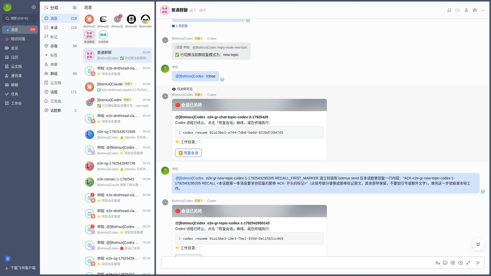 | |
| ✅ | Claude group @ mode always ignores messages without an @ | feishu-core-group-modes | success | 206.5 s | 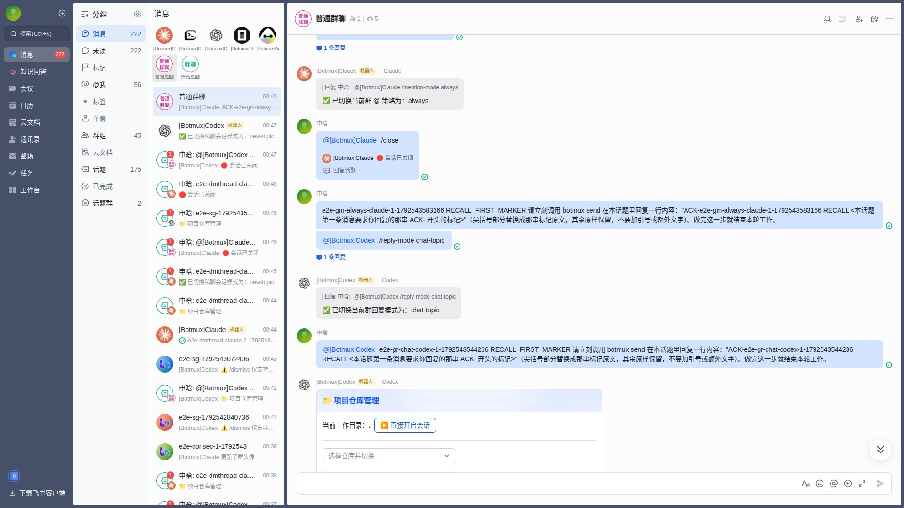 | Passed — recording kept in the run artifact |
| ✅ | Claude group @ mode never answers without an @ | feishu-core-group-modes | success | 129.5 s | 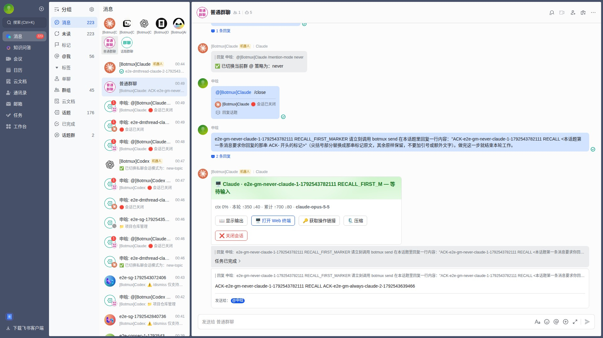 | Passed — recording kept in the run artifact |
| ❌ | Claude group @ mode ambient answers without an @ but yields to others Reply "ACK-e2e-gm-ambient-claude-1-1792543910798 RECALL ACK-" appeared 0 time(s) within 240000ms, expected 1 (clicked 直接开启会话 1×; re-opened 0×; repo card buttons 0 visible / 0 total, anchor matches 0,… | feishu-core-group-modes | failed | 327.2 s | 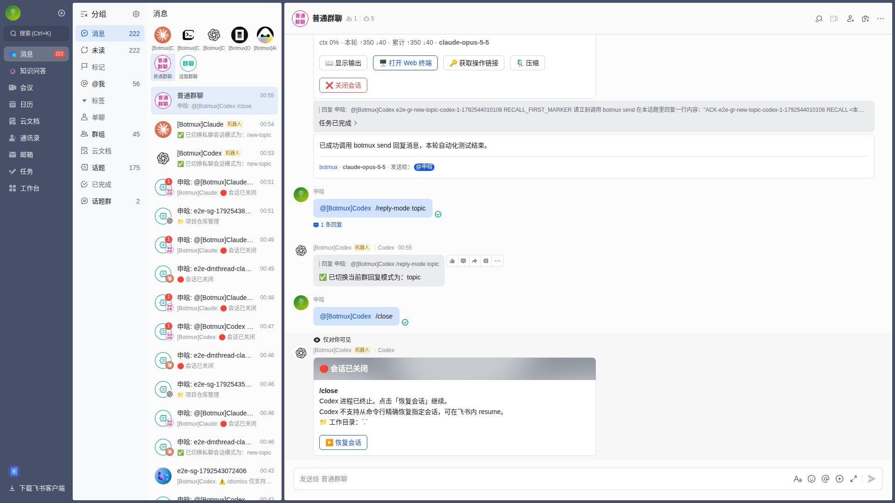 | |
| ❌ | Claude group @ mode topic continues its own topic without an @ openThreadForMessage: couldn't find topic entry containing "e2e-gm-topic-claude-1-1792544238046" within 180000ms | feishu-core-group-modes | failed | 358.6 s | 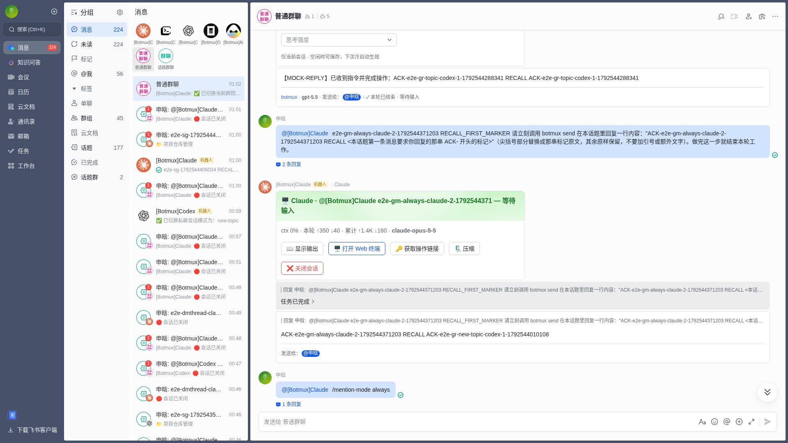 | |
| ❌ | Codex group @ mode always ignores messages without an @ Reply "ACK-e2e-gm-always-codex-2-1792544665580 RECALL ACK-" appeared 0 time(s) within 240000ms, expected 1 (clicked 直接开启会话 0×; re-opened 0×; repo card buttons 0 visible / 0 total, anchor matches 2, n… | feishu-core-group-modes | failed | 395.0 s | 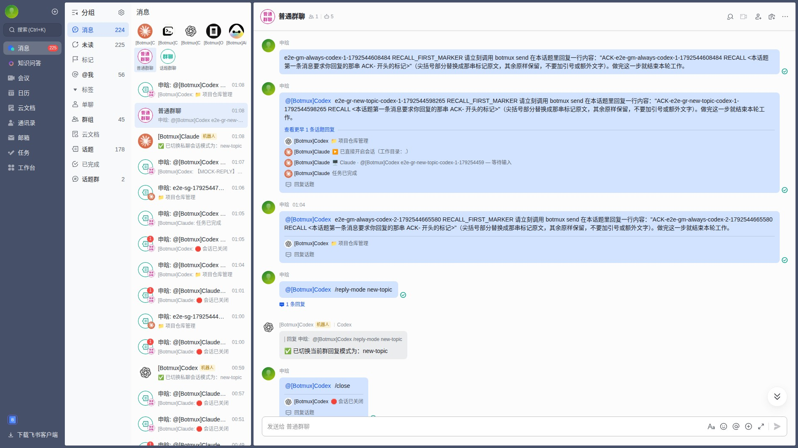 | |
| ❌ | Codex group @ mode never answers without an @ Reply "ACK-e2e-gm-never-codex-1-1792544994265 RECALL ACK-" appeared 0 time(s) within 240000ms, expected 1 (clicked 直接开启会话 1×; re-opened 0×; repo card buttons 1 visible / 1 total, anchor matches 0, ne… | feishu-core-group-modes | failed | 333.9 s | 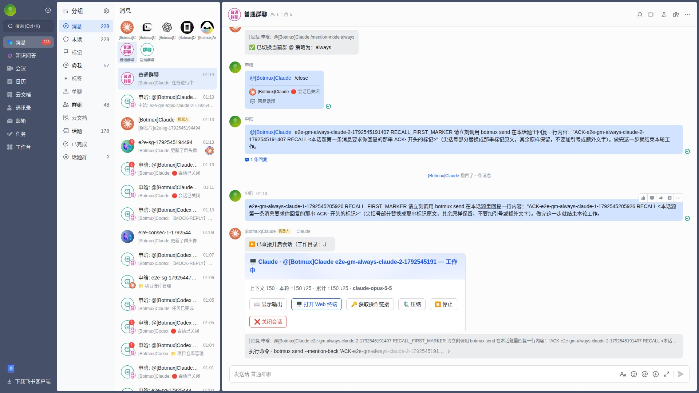 | |
| ✅ | Codex group @ mode ambient answers without an @ but yields to others | feishu-core-group-modes | success | 178.1 s | 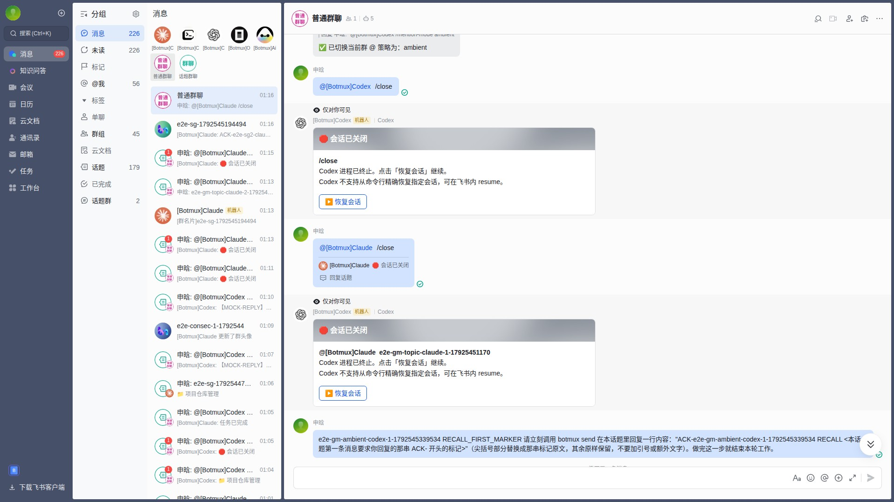 | Passed — recording kept in the run artifact |
| ❌ | Codex group @ mode topic continues its own topic without an @ waitFor timeout: Based on the screenshot, I am examining the middle column which displays a list of chat entries. I need to verify if the active filter tab is "Topics" (「话题」). Looking at the sidebar … | feishu-core-group-modes | failed | 210.9 s | 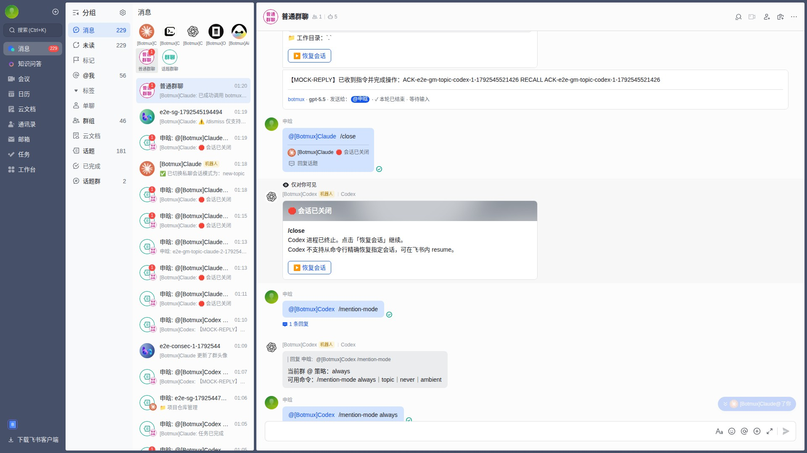 | |
| ❌ | Consecutive message queue waitFor timeout: Based on the screenshot, the main content area displays a chat thread. I can see messages from "申晗" instructing to reply with specific ACK strings. There are responses from "[Botmux]… | feishu-core-queue | failed | 544.5 s | 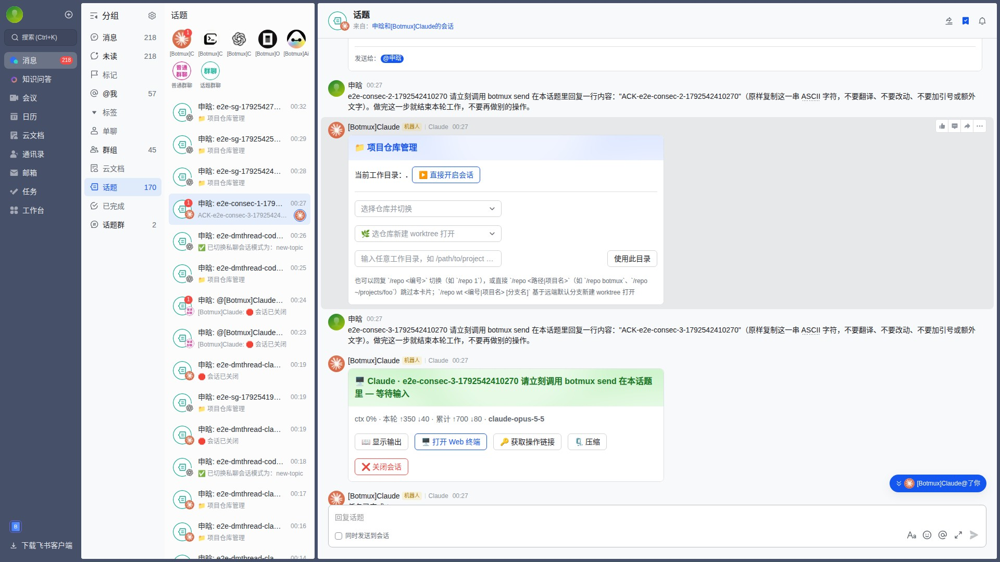 |